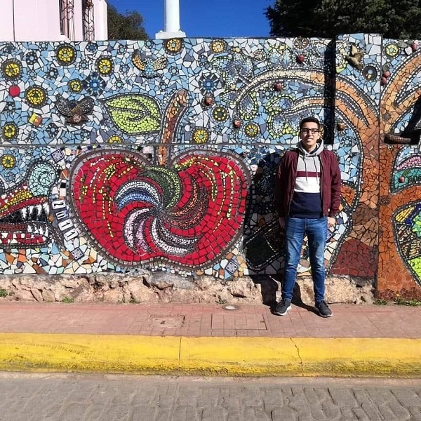

Soy desarrollador Frontend
Profesional en computación, con conocimientos y experiencia en análisis de sistemas. y desarrollo
web. Comprometido con la responsabilidad, empatía y trabajo en equipo
Maquetado de interfaces de usuario con HTML , CSS y Bootstrap, programación del lado del
cliente con JavaScript, TypeScript (Angular), AJAX.
Desarrollo de estrategias y mensajes que logren impactar al público objetivo, con el fin de lograr
que un grupo de personas adopte el comportamiento deseado.
